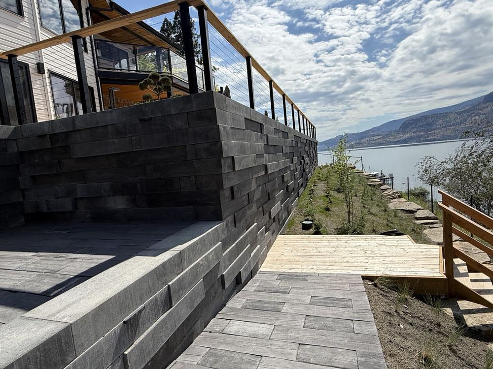

Retaining walls · Kelowna
Water pushes your retaining wall over, not weight

Got a wall that leans a little more every year? Odds are your wall is not short on block. It is short on base and drainage, like a lot of the walls Mike and Tyson get called to rebuild. Water gets in behind it and pushes, every rain and every snow melt.
If the crew that built it was one of your "many issues with other landscaping companies", you are in the same spot Matthew S. described in his review of KDT. This time, the fix starts under the block.
Most of Kelowna sits on a slope, a bench or a lakeview cut. That is what makes your yard worth having, and it is also why the cheap version fails. Half your lot on an angle means half your lot does nothing for you. A proper retaining wall turns that grade into flat ground you can use.
If your lot is a tricky one, you want what Justin Norbraten got. He wrote in his review that his project was "complex and dynamic" and that KDT "handles these challenges with ease". If your yard has grade and drainage problems, that is most of what KDT deals with.
Base first, drainage first
Your wall goes in base first, drainage first. Here is what that means:
- The base. This is the ground under the first row of block. Dug out and packed down, it keeps your wall from settling and tipping.
- The drainage. Water that soaks into the soil behind your wall needs a way out. Give it one and it stops pushing.
- The face. The block you see goes on last. It is the part you pick, and the part that matters least to whether your wall stays up.
A wall stacked straight on dirt can look perfect on the day the crew leaves. That is how you end up with a wall that leans by year three. The part you never see is the part that decides whether yours is still straight in fifteen years.
The honest downside
A lot of what you pay for on a good wall ends up buried. You will never see the base or the drainage again. It still costs less than building your wall twice.
If your wall is already moving
Lean, bulge or cracking is worth a look before it decides for you. Sometimes the existing base is worth keeping and sometimes it will fail again. Fill in the form or call. It takes a couple of minutes, and Tyson calls you back, usually the same day. Mike or Tyson walks the wall with you, about half an hour, at no charge, and tells you which. You get a written quote with the scope laid out and no pressure to sign on the day.
Who should call someone else
KDT is not the cheapest. If the lowest number is all you are after, someone will beat it, and you should take that quote. If you want a wall that is still straight in fifteen years, that is the work. You get Mike, who started KDT in Kelowna in 1999, and his son Tyson, on site and not just on the invoice. See walls, patios and full builds on the Kelowna landscaping page.
Does it cost anything to have you come out?
No. You get a walk-through and a written quote. If it is not for you, that is completely fine.
Do you build stone staircases too?
Yes. Structural walls, wide stone staircases, grade changes and drainage are all part of the work.
Who actually turns up?
Mike, Tyson and the crew. Your job does not get handed to a subcontractor you have never spoken to.
Turn the slope you cannot use into ground you can. Book your site visit or call KDT at (250) 258-7125.